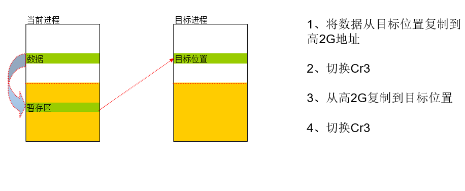

# 楔子
需要有 APC 的基础，学完句柄表和 APC 后再回来分析。
额外小知识 NUMA
要点回顾：
一个进程可以包含多个线程
一个进程至少要有一个线程
进程为线程提供资源，也就是提供 Cr3 的值，Cr3 中存储的是页目录表基址，Cr3 确定了，线程能访问的内存也就确定了。
# 进程挂靠
首先要了解以下知识
# 进程与线程的关系
线程代码：
mov eax,dword ptr ds:[0x12345678]
CPU 如何解析 0x12345678 这个地址呢？
CPU 解析线性地址时要通过页目录表来找对应的物理页，页目录表基址存在
Cr3 寄存器中。当前的 Cr3 的值来源于当前的进程 (_KPROCESS.DirectoryTableBase (+0x018))。
# 线程与进程的关联
线程是如何找到进程的呢？线程与进程是如何关联的呢？
在线程的结构体中：
+0x034 ApcState | |
+0x000 ApcListHead | |
+0x010 Process | |
+0x014 KernelApcInProgress | |
+0x015 KernelApcPending | |
+0x016 UserApcPending | |
+0x220 ThreadsProcess |
有两处与进程相关的成员： Process 与 ThreadsProcess ，那么这两个成员与线程有什么关系呢？
# 0x044 负责提供 Cr3
(分析 SwapContext 函数) 线程切换的时候，会比较_KTHREAD 结构体 0x044 处指定的 EPROCESS 是否为同一个，如果不是同一个，会将 0x044 处指定的 EPROCESS 的 DirectoryTableBase 的值取出，赋值给 Cr3。
所以，线程需要的 Cr3 的值来源于 0x044 处偏移指定的 EPROCESS.
可以得出以下结论：
0x220 亲生父母：这个线程谁创建的
0x044 养父母：谁在为这个线程提供资源 (也就是提供 Cr3)
一般情况下，0x220 与 0x44 指向的是同一个进程
那么 Cr3 的值可以随便改吗？
# 修改 Cr3 的值
正常情况下，Cr3 的值是由养父母提供的，但 Cr3 的值也可以改成和当前线程毫不相干的其他进程的 DirectoryTableBase。
线程代码：
mov cr3,A.DirectoryTableBase | |
mov eax,dword ptr ds:[0x12345678] //A 进程的 0x12345678 内存 | |
mov cr3,B.DirectoryTableBase | |
mov eax,dword ptr ds:[0x12345678] //B 进程的 0x12345678 内存 | |
mov cr3,C.DirectoryTableBase | |
mov eax,dword ptr ds:[0x12345678] //C 进程的 0x12345678 内存 |
将当前 Cr3 的值改为其他进程，称为 “进程挂靠”。
那可不可以只修改 Cr3 而不修改养父母？不可以，如果不修改养父母的值，一旦产生线程切换，就会变成自己读自己！
如果我们自己来写这个代码，在切换 Cr3 后关闭中断，并且不调用会导致线程切换的 API，就可以不用修改养父母的值。
# 总结
正常情况下，当前线程使用的 Cr3 是由其所属进程提供的 (ETHREAD 0x44 偏移处指定的 EPROCESS)，正是因为如此，A 进程中的线程只能访问 A 的内存。
如果要让 A 进程中的线程能够访问 B 进程的内存，就必须要修改 Cr3 的值为 B 进程的页目录表基址 (B.DirectoryTableBase)，这就是所谓的 “进程挂靠”。
# 跨进程读写内存
跨进程的本质是 “进程挂靠”，正常情况下，A 进程的线程只能访问 A 进程的地址空间，如果 A 进程的线程想访问 B 进程的地址空间，就要修改当前的 Cr3 的值为 B 进程的页目录表基值 (KPROCESS.DirectoryTableBase)。
即： mov cr3,B.DirectoryTableBase
# 跨进程操作
A 进制中的线程代码：
mov cr3,B.DirectoryTableBase // 切换 Cr3 的值为 B 进程 | |
mov eax,dword ptr ds:[0x12345678] // 将进程 B 0x12345678 的值存的 eax 中 | |
mov dword ptr ds:[0x00401234],eax // 将数据存储到 0x00401234 中 | |
mov cr3,A.DirectoryTableBase // 切换回 Cr3 的值 |
此时 0x00401234 中的数据还有吗？如何将数据传递给 A 进程的变量呢？
# NtReadVirtualMemory 流程解析
一些关键函数的声明为：
NTSTATUS | |
NtReadVirtualMemory ( | |
IN HANDLE ProcessHandle, // 为进程对象提供一个打开的句柄。 | |
IN PVOID BaseAddress,// 提供要读取的指定进程中的基址。 | |
OUT PVOID Buffer,// 提供缓冲区的地址，该缓冲区接收来自指定进程地址空间的内容。 | |
IN SIZE_T BufferSize,// 提供要从指定进程读取的请求字节数。 | |
OUT PSIZE_T NumberOfBytesRead OPTIONAL // 接收传输到指定缓冲区的实际字节数。 | |
) | |
NTSTATUS | |
MmCopyVirtualMemory( | |
IN PEPROCESS FromProcess, | |
IN CONST VOID *FromAddress, | |
IN PEPROCESS ToProcess, | |
OUT PVOID ToAddress, | |
IN SIZE_T BufferSize, | |
IN KPROCESSOR_MODE PreviousMode, | |
OUT PSIZE_T NumberOfBytesCopied | |
) | |
NTSTATUS | |
MiDoMappedCopy ( | |
IN PEPROCESS FromProcess,// 为进程对象提供一个打开的句柄。 | |
IN CONST VOID *FromAddress,// 提供要读取的指定进程中的基址。 | |
IN PEPROCESS ToProcess,// 为进程对象提供一个打开的句柄。 | |
OUT PVOID ToAddress,// 提供缓冲区的地址，该缓冲区接收来自指定进程地址空间的内容。 | |
IN SIZE_T BufferSize,// 提供要从指定进程读取的请求字节数。 | |
IN KPROCESSOR_MODE PreviousMode,// 提供以前的处理器模式。 | |
OUT PSIZE_T NumberOfBytesRead// 接收传输到指定缓冲区的实际字节数。 | |
) | |
NTSTATUS | |
MiDoPoolCopy ( | |
IN PEPROCESS FromProcess,// 为进程对象提供一个打开的句柄。 | |
IN CONST VOID *FromAddress,// 提供要读取的指定进程中的基址。 | |
IN PEPROCESS ToProcess,// 为进程对象提供一个打开的句柄。 | |
OUT PVOID ToAddress,// 提供缓冲区的地址，该缓冲区接收来自指定进程地址空间的内容。 | |
IN SIZE_T BufferSize,// 提供要从指定进程读取的请求字节数。 | |
IN KPROCESSOR_MODE PreviousMode,// 提供以前的处理器模式。 | |
OUT PSIZE_T NumberOfBytesRead// 接收传输到指定缓冲区的实际字节数。 | |
) | |
/*-- 这个函数将一个线程附加到目标进程的地址空间，并返回上一个附加进程前的 APC 状态信息。--*/ | |
VOID | |
KeStackAttachProcess ( | |
IN PRKPROCESS Process, | |
OUT PRKAPC_STATE ApcState | |
) | |
/*-- 这个函数将一个线程从另一个进程的地址空间中分离出来，并恢复之前的连接状态。--*/ | |
VOID | |
KeUnstackDetachProcess ( | |
IN PRKAPC_STATE ApcState // 提供一个指向 APC 状态结构的指针，该结构是由之前对堆栈附加进程的调用返回的。 | |
) |
# 逆向分析 NtReadVirtualMemory
NtReadVirtualMemory 逆向分析 （点击展开）
; NTSTATUS __stdcall NtReadVirtualMemory(HANDLE ProcessHandle, PVOID BaseAddress, PVOID Buffer, SIZE_T NumberOfBytesToRead, PSIZE_T NumberOfBytesRead)
PAGE:004DD2F6 _NtReadVirtualMemory@20 proc near ; DATA XREF: .text:0042D858↑o
PAGE:004DD2F6
PAGE:004DD2F6 var_2C = dword ptr -2Ch
PAGE:004DD2F6 var_28 = dword ptr -28h
PAGE:004DD2F6 Object = dword ptr -24h
PAGE:004DD2F6 AccessMode = byte ptr -20h
PAGE:004DD2F6 var_1C = dword ptr -1Ch
PAGE:004DD2F6 ms_exc = CPPEH_RECORD ptr -18h
PAGE:004DD2F6 ProcessHandle = dword ptr 8
PAGE:004DD2F6 BaseAddress = dword ptr 0Ch
PAGE:004DD2F6 Buffer = dword ptr 10h
PAGE:004DD2F6 NumberOfBytesToRead= dword ptr 14h
PAGE:004DD2F6 NumberOfBytesRead= dword ptr 18h
PAGE:004DD2F6
PAGE:004DD2F6 ; __unwind { // __SEH_prolog
PAGE:004DD2F6 push 1Ch
PAGE:004DD2F8 push offset stru_402EF0
PAGE:004DD2FD call __SEH_prolog
PAGE:004DD302 mov eax, large fs:124h ; eax = 当前的KTHREAD
PAGE:004DD308 mov edi, eax ; edi = eax
PAGE:004DD30A mov al, [edi+_KTHREAD.PreviousMode]
PAGE:004DD310 mov [ebp+AccessMode], al
PAGE:004DD313 mov esi, [ebp+NumberOfBytesToRead]
PAGE:004DD316 test al, al ; 如果不是内核模式 （KernelMode = 0） 则对参数做一系列的验证。
PAGE:004DD318 jz short loc_4DD380
PAGE:004DD31A mov eax, [ebp+BaseAddress]
PAGE:004DD31D lea edx, [eax+esi]
PAGE:004DD320 cmp edx, eax
PAGE:004DD322 jb short loc_4DD379
PAGE:004DD324 mov eax, [ebp+Buffer]
PAGE:004DD327 lea ecx, [eax+esi]
PAGE:004DD32A cmp ecx, eax
PAGE:004DD32C jb short loc_4DD379
PAGE:004DD32E mov eax, _MmHighestUserAddress ; MmHighestUserAddress = 0x7FFEFFFF 最高的用户层地址
PAGE:004DD333 cmp edx, eax
PAGE:004DD335 ja short loc_4DD379
PAGE:004DD337 cmp ecx, eax
PAGE:004DD339 ja short loc_4DD379
PAGE:004DD33B mov ebx, [ebp+NumberOfBytesRead] ; 判断 NumberOfBytesRead 参数是否存在（是否为NULL）
PAGE:004DD33B ;
PAGE:004DD33B ; if(NumberOfBytesRead)（是否为NULL）{
PAGE:004DD33B ;
PAGE:004DD33B ; ……………………
PAGE:004DD33B ; }
PAGE:004DD33B ; 不为NULL 执行 jz 跳走
PAGE:004DD33E test ebx, ebx
PAGE:004DD340 jz short loc_4DD383
PAGE:004DD342 and [ebp+ms_exc.registration.TryLevel], 0
PAGE:004DD346 mov eax, _MmUserProbeAddress ; _MmUserProbeAddress = 0x7FFF0000 保护页的起始地址
PAGE:004DD34B cmp ebx, eax
PAGE:004DD34D jb short loc_4DD355
PAGE:004DD34F mov dword ptr [eax], 0
PAGE:004DD355
PAGE:004DD355 loc_4DD355: ; CODE XREF: NtReadVirtualMemory(x,x,x,x,x)+57↑j
PAGE:004DD355 mov eax, [ebx]
PAGE:004DD357 mov [ebx], eax
PAGE:004DD359 or [ebp+ms_exc.registration.TryLevel], 0FFFFFFFFh
PAGE:004DD35D jmp short loc_4DD383
PAGE:004DD35F ; ---------------------------------------------------------------------------
PAGE:004DD35F
PAGE:004DD35F loc_4DD35F: ; DATA XREF: .text:stru_402EF0↑o
PAGE:004DD35F mov eax, [ebp+ms_exc.exc_ptr]
PAGE:004DD362 mov eax, [eax]
PAGE:004DD364 mov eax, [eax]
PAGE:004DD366 mov [ebp+var_2C], eax
PAGE:004DD369 xor eax, eax
PAGE:004DD36B inc eax
PAGE:004DD36C retn
PAGE:004DD36D ; ---------------------------------------------------------------------------
PAGE:004DD36D
PAGE:004DD36D loc_4DD36D: ; DATA XREF: .text:stru_402EF0↑o
PAGE:004DD36D mov esp, [ebp+ms_exc.old_esp]
PAGE:004DD370 or [ebp+ms_exc.registration.TryLevel], 0FFFFFFFFh
PAGE:004DD374 mov eax, [ebp+var_2C]
PAGE:004DD377 jmp short loc_4DD3F2
PAGE:004DD379 ; ---------------------------------------------------------------------------
PAGE:004DD379
PAGE:004DD379 loc_4DD379: ; CODE XREF: NtReadVirtualMemory(x,x,x,x,x)+2C↑j
PAGE:004DD379 ; NtReadVirtualMemory(x,x,x,x,x)+36↑j ...
PAGE:004DD379 mov eax, 0C0000005h
PAGE:004DD37E jmp short loc_4DD3F2
PAGE:004DD380 ; ---------------------------------------------------------------------------
PAGE:004DD380
PAGE:004DD380 loc_4DD380: ; CODE XREF: NtReadVirtualMemory(x,x,x,x,x)+22↑j
PAGE:004DD380 mov ebx, [ebp+NumberOfBytesRead] ; ebx = NumberOfBytesRead
PAGE:004DD383
PAGE:004DD383 loc_4DD383: ; CODE XREF: NtReadVirtualMemory(x,x,x,x,x)+4A↑j
PAGE:004DD383 ; NtReadVirtualMemory(x,x,x,x,x)+67↑j
PAGE:004DD383 xor eax, eax
PAGE:004DD385 mov [ebp+var_28], eax ; [ebp+var_28] = 0
PAGE:004DD388 mov [ebp+var_1C], eax
PAGE:004DD38B cmp esi, eax
PAGE:004DD38D jz short loc_4DD3D2 ; ebx = NumberOfBytesRead
PAGE:004DD38F push eax ; HandleInformation
PAGE:004DD390 lea eax, [ebp+Object] ; eax = [ebp+Object] 的地址
PAGE:004DD390 ;
PAGE:004DD390 ; 函数执行成功后[ebp+Object]会指向一个对象体。
PAGE:004DD390 ; 此处返回的是 进程结构体 EPROCESS
PAGE:004DD393 push eax ; Object
PAGE:004DD394 push dword ptr [ebp+AccessMode] ; AccessMode
PAGE:004DD397 push _PsProcessType ; ObjectType
PAGE:004DD39D push 10h ; DesiredAccess
PAGE:004DD39F push [ebp+ProcessHandle] ; Handle
PAGE:004DD3A2 call _ObReferenceObjectByHandle@24 ; ObReferenceObjectByHandle(x,x,x,x,x,x)
PAGE:004DD3A7 mov [ebp+var_1C], eax
PAGE:004DD3AA test eax, eax
PAGE:004DD3AC jnz short loc_4DD3D2 ; ebx = NumberOfBytesRead
PAGE:004DD3AE lea eax, [ebp+var_28] ; 取临时变量的地址
PAGE:004DD3B1 push eax ; 从右向左 压入第一个参数 其值是一个地址 。
PAGE:004DD3B2 push dword ptr [ebp+AccessMode] ; 其值为 CPU的工作模式
PAGE:004DD3B5 push esi ; 压入 NumberOfBytesToRead 也就是从指定进程读取的请求字节数
PAGE:004DD3B5 ;
PAGE:004DD3B5 ; 注意区分 NumberOfBytesRead 和 NumberOfBytesToRead
PAGE:004DD3B6 push [ebp+Buffer] ; Address
PAGE:004DD3B9 push [edi+_KTHREAD.ApcState.Process] ; 当前线程的进程KPROCESS
PAGE:004DD3BC push [ebp+BaseAddress] ; int
PAGE:004DD3BF push [ebp+Object] ; 目标进程的KPROCESS
PAGE:004DD3C2 call _MmCopyVirtualMemory@28 ; NTSTATUS
PAGE:004DD3C2 ; MmCopyVirtualMemory(
PAGE:004DD3C2 ; IN PEPROCESS FromProcess,
PAGE:004DD3C2 ; IN CONST VOID *FromAddress,
PAGE:004DD3C2 ; IN PEPROCESS ToProcess,
PAGE:004DD3C2 ; OUT PVOID ToAddress,
PAGE:004DD3C2 ; IN SIZE_T BufferSize,
PAGE:004DD3C2 ; IN KPROCESSOR_MODE PreviousMode,
PAGE:004DD3C2 ; OUT PSIZE_T NumberOfBytesCopied
PAGE:004DD3C2 ; )
PAGE:004DD3C7 mov [ebp+var_1C], eax ; 如果成功的话返回值为0 var_1C = 0
PAGE:004DD3CA mov ecx, [ebp+Object] ; Object
PAGE:004DD3CD call @ObfDereferenceObject@4 ; 这个例程减少指定对象的引用计数，如果计数变为0，则执行 任何(whatever) 清除操作。
PAGE:004DD3D2
PAGE:004DD3D2 loc_4DD3D2: ; CODE XREF: NtReadVirtualMemory(x,x,x,x,x)+97↑j
PAGE:004DD3D2 ; NtReadVirtualMemory(x,x,x,x,x)+B6↑j
PAGE:004DD3D2 test ebx, ebx ; ebx = NumberOfBytesRead
PAGE:004DD3D4 jz short loc_4DD3EF
PAGE:004DD3D6 mov [ebp+ms_exc.registration.TryLevel], 1
PAGE:004DD3DD mov eax, [ebp+var_28] ; var_28 指向了 传输到指定缓冲区的实际字节数。
PAGE:004DD3E0 mov [ebx], eax ; 传输到指定缓冲区的实际字节数 赋给 NumberOfBytesRead
PAGE:004DD3E2 jmp short loc_4DD3EB
PAGE:004DD3E4 ; ---------------------------------------------------------------------------
PAGE:004DD3E4
PAGE:004DD3E4 loc_4DD3E4: ; DATA XREF: .text:stru_402EF0↑o
PAGE:004DD3E4 xor eax, eax
PAGE:004DD3E6 inc eax
PAGE:004DD3E7 retn
PAGE:004DD3E8 ; ---------------------------------------------------------------------------
PAGE:004DD3E8
PAGE:004DD3E8 loc_4DD3E8: ; DATA XREF: .text:stru_402EF0↑o
PAGE:004DD3E8 mov esp, [ebp+ms_exc.old_esp]
PAGE:004DD3EB
PAGE:004DD3EB loc_4DD3EB: ; CODE XREF: NtReadVirtualMemory(x,x,x,x,x)+EC↑j
PAGE:004DD3EB or [ebp+ms_exc.registration.TryLevel], 0FFFFFFFFh
PAGE:004DD3EF
PAGE:004DD3EF loc_4DD3EF: ; CODE XREF: NtReadVirtualMemory(x,x,x,x,x)+DE↑j
PAGE:004DD3EF mov eax, [ebp+var_1C] ; 一切正常执行的话 eax = 0 既宏定义 STATUS_SUCCESS
PAGE:004DD3F2
PAGE:004DD3F2 loc_4DD3F2: ; CODE XREF: NtReadVirtualMemory(x,x,x,x,x)+81↑j
PAGE:004DD3F2 ; NtReadVirtualMemory(x,x,x,x,x)+88↑j
PAGE:004DD3F2 call __SEH_epilog
PAGE:004DD3F7 retn 14h
PAGE:004DD3F7 ; } // starts at 4DD2F6
PAGE:004DD3F7 _NtReadVirtualMemory@20 endp
PAGE:004DD3F7
PAGE:004DD3F7 ; ---------------------------------------------------------------------------
主要调用了 MmCopyVirtualMemory 函数。
# 逆向分析 MmCopyVirtualMemory
MmCopyVirtualMemory (点击展开)
; int __stdcall MmCopyVirtualMemory(PEX_RUNDOWN_REF FromProcess, int, PRKPROCESS, volatile void *Address, SIZE_T Length, KPROCESSOR_MODE AccessMode, int NumberOfBytesRead)
PAGE:004DD258 _MmCopyVirtualMemory@28 proc near ; CODE XREF: IopCheckHardErrorsDisabled(x)+73↑p
PAGE:004DD258 ; LpcpCopyRequestData(x,x,x,x,x,x,x):loc_4CEE57↑p ...
PAGE:004DD258
PAGE:004DD258 FromProcess = dword ptr 8
PAGE:004DD258 FromAddress = dword ptr 0Ch
PAGE:004DD258 ToProcess = dword ptr 10h
PAGE:004DD258 Address = dword ptr 14h
PAGE:004DD258 Length = dword ptr 18h
PAGE:004DD258 AccessMode = byte ptr 1Ch
PAGE:004DD258 NumberOfBytesRead= dword ptr 20h
PAGE:004DD258
PAGE:004DD258 mov edi, edi
PAGE:004DD25A push ebp
PAGE:004DD25B mov ebp, esp
PAGE:004DD25D cmp [ebp+Length], 0 ; NumberOfBytesToRead 判断 从指定进程读取的请求字节数，是否为0
PAGE:004DD261 jnz short loc_4DD26A
PAGE:004DD263 xor eax, eax
PAGE:004DD265 jmp loc_4DD2ED ; 为 0 就直接返回了
PAGE:004DD26A ; ---------------------------------------------------------------------------
PAGE:004DD26A
PAGE:004DD26A loc_4DD26A: ; CODE XREF: MmCopyVirtualMemory(x,x,x,x,x,x,x)+9↑j
PAGE:004DD26A push ebx
PAGE:004DD26B mov ebx, [ebp+FromProcess] ; ebx = 要读取的进程的 EPROCESS 结构体。
PAGE:004DD26E mov ecx, ebx
PAGE:004DD270 mov eax, large fs:124h
PAGE:004DD276 cmp ebx, [eax+_KTHREAD.ApcState.Process] ; 判断要读取的进程 是否是当前进程
PAGE:004DD279 jnz short loc_4DD27E
PAGE:004DD27B mov ecx, [ebp+ToProcess]
PAGE:004DD27E
PAGE:004DD27E loc_4DD27E: ; CODE XREF: MmCopyVirtualMemory(x,x,x,x,x,x,x)+21↑j
PAGE:004DD27E add ecx, 80h ; '€' ; 取 目标EPROCESS 的 RundownProtect 成员的值
PAGE:004DD284 mov [ebp+FromProcess], ecx
PAGE:004DD287 call @ExAcquireRundownProtection@4 ; 获得rundown保护
PAGE:004DD28C test al, al ; 判断是否成功
PAGE:004DD28E jnz short loc_4DD297 ; 如果成功就跳走
PAGE:004DD290 mov eax, 0C000010Ah ; 返回 STATUS_PROCESS_IS_TERMINATING
PAGE:004DD295 jmp short loc_4DD2EC ; 如果失败，函数执行失败 返回
PAGE:004DD297 ; ---------------------------------------------------------------------------
PAGE:004DD297
PAGE:004DD297 loc_4DD297: ; CODE XREF: MmCopyVirtualMemory(x,x,x,x,x,x,x)+36↑j
PAGE:004DD297 cmp [ebp+Length], 1FFh ; 判读要读取的字节大小是否超过0x1FF
PAGE:004DD29E push esi
PAGE:004DD29F push edi
PAGE:004DD2A0 mov edi, [ebp+NumberOfBytesRead] ; edi = 指向NumberOfBytesRead的地址
PAGE:004DD2A0 ;
PAGE:004DD2A0 ; 在 NtReadVirtualMemory 中传来的此值是一个地址。
PAGE:004DD2A0 ; 应该是返回用的
PAGE:004DD2A3 jbe short loc_4DD2C8 ; 小于等于则跳转
PAGE:004DD2A5 push edi ; 压入 指向NumberOfBytesRead的地址
PAGE:004DD2A6 push dword ptr [ebp+AccessMode] ; AccessMode
PAGE:004DD2A9 push [ebp+Length] ; Length
PAGE:004DD2AC push [ebp+Address] ; ToAddress
PAGE:004DD2AF push [ebp+ToProcess] ; ToProcess
PAGE:004DD2B2 push [ebp+FromAddress] ; FromAddress
PAGE:004DD2B5 push ebx ; FromProcess
PAGE:004DD2B6 call _MiDoMappedCopy@28 ; NTSTATUS
PAGE:004DD2B6 ; MiDoMappedCopy (
PAGE:004DD2B6 ; IN PEPROCESS FromProcess,
PAGE:004DD2B6 ; IN CONST VOID *FromAddress,
PAGE:004DD2B6 ; IN PEPROCESS ToProcess,
PAGE:004DD2B6 ; OUT PVOID ToAddress,
PAGE:004DD2B6 ; IN SIZE_T BufferSize,
PAGE:004DD2B6 ; IN KPROCESSOR_MODE PreviousMode,
PAGE:004DD2B6 ; OUT PSIZE_T NumberOfBytesRead
PAGE:004DD2B6 ; )
PAGE:004DD2BB mov esi, eax
PAGE:004DD2BD cmp esi, 0C00000A1h
PAGE:004DD2C3 jnz short loc_4DD2E0
PAGE:004DD2C5 and dword ptr [edi], 0
PAGE:004DD2C8
PAGE:004DD2C8 loc_4DD2C8: ; CODE XREF: MmCopyVirtualMemory(x,x,x,x,x,x,x)+4B↑j
PAGE:004DD2C8 push edi ; 压入 指向NumberOfBytesRead的地址
PAGE:004DD2C9 push dword ptr [ebp+AccessMode] ; AccessMode
PAGE:004DD2CC push [ebp+Length] ; Length
PAGE:004DD2CF push [ebp+Address] ; ToAddress
PAGE:004DD2D2 push [ebp+ToProcess] ; ToProcess
PAGE:004DD2D5 push [ebp+FromAddress] ; FromAddress
PAGE:004DD2D8 push ebx ; FromProcess
PAGE:004DD2D9 call _MiDoPoolCopy@28 ; NTSTATUS
PAGE:004DD2D9 ; MiDoPoolCopy (
PAGE:004DD2D9 ; IN PEPROCESS FromProcess,
PAGE:004DD2D9 ; IN CONST VOID *FromAddress,
PAGE:004DD2D9 ; IN PEPROCESS ToProcess,
PAGE:004DD2D9 ; OUT PVOID ToAddress,
PAGE:004DD2D9 ; IN SIZE_T BufferSize,
PAGE:004DD2D9 ; IN KPROCESSOR_MODE PreviousMode,
PAGE:004DD2D9 ; OUT PSIZE_T NumberOfBytesRead
PAGE:004DD2D9 ; )
PAGE:004DD2DE mov esi, eax
PAGE:004DD2E0
PAGE:004DD2E0 loc_4DD2E0: ; CODE XREF: MmCopyVirtualMemory(x,x,x,x,x,x,x)+6B↑j
PAGE:004DD2E0 mov ecx, [ebp+FromProcess] ; RunRef
PAGE:004DD2E3 call @ExReleaseRundownProtection@4 ; ExReleaseRundownProtection(x)
PAGE:004DD2E8 pop edi
PAGE:004DD2E9 mov eax, esi
PAGE:004DD2EB pop esi
PAGE:004DD2EC
PAGE:004DD2EC loc_4DD2EC: ; CODE XREF: MmCopyVirtualMemory(x,x,x,x,x,x,x)+3D↑j
PAGE:004DD2EC pop ebx
PAGE:004DD2ED
PAGE:004DD2ED loc_4DD2ED: ; CODE XREF: MmCopyVirtualMemory(x,x,x,x,x,x,x)+D↑j
PAGE:004DD2ED pop ebp
PAGE:004DD2EE retn 1Ch
PAGE:004DD2EE _MmCopyVirtualMemory@28 endp
这个函数会 cmp [ebp+Length], 1FFh ; 判读要读取的字节大小是否超过 0x1FF，如果没有超过就会调用 _MiDoPoolCopy 函数，超过的话就会调用 _MiDoMappedCopy 。
_MiDoMappedCopy 有些地方没逆懂，但关键地方都一样。详细看 _MiDoPoolCopy 了。
# 逆向分析 _MiDoPoolCopy
_MiDoPoolCopy (点击展开)

# 逆向分析 KeStackAttachProcess
KeStackAttachProcess (点击展开)
# 逆向分析 KiAttachProcess
KiAttachProcess (点击展开)

# 逆向分析 KiSwapProcess
KiSwapProcess (点击展开)
# 函数调用流程中的各个函数总结
NtReadVirtualMemory实现路径 (点击展开)
NtReadVirtualMemory做了一些验证后调用了MmCopyVirtualMemoryMmCopyVirtualMemory在这个函数中判断了缓冲区的大小，如果缓冲区大小大于池移动阈值，则尝试通过直接映射写入内存。这里根据情况调用MiDoMappedCopy和MiDoPoolCopy。MiDoMappedCopy函数有很多结构体还没学，暂时逆不懂，先逆MiDoPoolCopy了。MiDoPoolCopy函数在读取内存的方法是先在内核层申请一份和要读取的字节大小一样的内存，然后调用了KeStackAttachProcess函数。- 这里先说
KeStackAttachProcess函数了，这个函数首先判断了要附加的进程是不是当前进程，然后又判断当前线程是不是已经处于挂靠状态了，如果处于挂靠状态的话，把原来的 APC 状态保存到 ApcState 变量中，否则的话就把原来的 APC 状态保存到线程结构体的 KTHREAD 的SavedApcState成员中。 这里是判断之后调用KiAttachProcess函数时传递的参数不一样来实现的。
如下：
if (Thread->ApcStateIndex != 0) {// 已经处于挂靠状态
KiAttachProcess(Thread, Process, OldIrql, ApcState); // 会把原来的 APC 状态赋给 ApcState 变量，是上层函数返回的变量。
} else { // 没有处于挂靠状态
KiAttachProcess(Thread, Process, OldIrql, &Thread->SavedApcState);// 传递当前线程的 SavedApcState，用它来接收以前的 APC 状态。
ApcState->Process = NULL; // 标识一下，在 KeStackAttachProcess 中会判断
}在
KiAttachProcess函数中，先把当前线程 KTEHREAD 的 ApcState 成员保存了一份赋值给了一个指针变量 ，这个指针变量是这个函数的参数，如果线程已将处于挂靠状态，那么这个指针变量就是上层函数的临时变量，如果没有处于挂靠状态那么这个指针变量就是当前线程 KTHREAD 的SavedApcState成员。
然后把当前线程 KTHREAD 的ApcState保存到了这个指针变量中，这一步既保存了没挂靠前的 APC 状态，之后初始化新的线程 KTHREAD 的ApcState成员。
然后判断目标进程的状态是否在内存中，如果在内存中，就把所有处于 ready 状态的线程，移动到全局就绪链表中，然后调用了KiSwapProcess函数后就返回了。
如果进程的状态不是在内存中，则判断其状态是不是 ProcessOutOfMemory 既不在内存中，如果是则设置其状态为正在转移，然后把进程 KPROCESS 的SwapListEntry成员挂入到KiProcessInSwapListHead中。SwapListEntry成员在《Windows 内核原理与实现》一书中有介绍：KiProcessInSwapListHead这是等待被插入的进程链表，它是一个单链表。当一个进程要被换出内存时，通过此成员加入到以KiProcessOutSwapListHead为链头的单链表中；当一个进程要被换入内存时，通过此成员加入到以KiProcessInSwapListHead为链头的单链表中。
如果状态不是 ProcessOutOfMemory 的话，会直接执行这一步： 清除前一个进程中的活动处理器位，并设置被附加进程中的活动处理器位。
绕后调用了KiSwapThread函数- 调用
KiSwapProcess函数：这个函数主要更新了 GDT 中的 LDT 描述符和 IDT 中的 int 2h, 并交换 CR3 来将地址空间交换到另一个进程。 它还将 I/O 权限映射交换到新进程。 - 调用
KiSwapThread，主动调用线程切换，既把目标进程的线程激活，使其在内存中，直到线程切换切回来，因为 APC 的状态已经更换成了目标进程，而 Cr3 是取线程的 APC 状态中的进程 KPROCESS 中的DirectoryTableBase成员， 所以切换回来后，线程的 Cr3 也就改了，至此挂靠完成了。真是巧妙呀。
- 调用
- 这里先说
挂靠后又回到了
MiDoPoolCopy函数中，然后就开始复制内存了，把目标进程空间的内存，复制到了内核空间。然后调用了KeUnstackDetachProcess解除了挂靠状态，KeUnstackDetachProcess最终也是调用了KiSwapProcess函数不在细说了。解除挂靠后又挂靠了回了原来的自己的进程，然后把在内核空间的内存数据复制到了，原来线程空间指定的缓存区中，然后就解除挂靠了，之后又释放了在内核空间申请的内存空间，统计了一下复制了多少字节数后返回了。
# NtWriteVirtualMemory 流程分析
此函数的调用流程与 NtReadVirtualMemory 一样。
NtReadVirtualMemory -> MmCopyVirtualMemory -> MiDoMappedCopy 或者 MiDoPoolCopy
（点击展开）
PAGE:004DD400 ; NTSTATUS __stdcall NtWriteVirtualMemory (HANDLE ProcessHandle, PVOID BaseAddress, PVOID Buffer, SIZE_T NumberOfBytesToWrite, PSIZE_T NumberOfBytesWritten) | |
PAGE:004DD400 _NtWriteVirtualMemory@20 proc near ; DATA XREF: .text:0042D9C4↑o | |
PAGE:004DD400 | |
PAGE:004DD400 var_2C = dword ptr -2Ch | |
PAGE:004DD400 NumberOfBytesRead= dword ptr -28h | |
PAGE:004DD400 Object = dword ptr -24h | |
PAGE:004DD400 AccessMode = byte ptr -20h | |
PAGE:004DD400 Status = dword ptr -1Ch | |
PAGE:004DD400 ms_exc = CPPEH_RECORD ptr -18h | |
PAGE:004DD400 ProcessHandle = dword ptr 8 | |
PAGE:004DD400 BaseAddress = dword ptr 0Ch | |
PAGE:004DD400 Buffer = dword ptr 10h | |
PAGE:004DD400 NumberOfBytesToWrite= dword ptr 14h | |
PAGE:004DD400 NumberOfBytesWritten= dword ptr 18h | |
PAGE:004DD400 | |
PAGE:004DD400 ; __unwind { //__SEH_prolog | |
PAGE:004DD400 push 1Ch | |
PAGE:004DD402 push offset stru_402F08 | |
PAGE:004DD407 call __SEH_prolog | |
PAGE:004DD40C mov eax, large fs:124h | |
PAGE:004DD412 mov edi, eax ; edi = 当先线程的 KTHREAD | |
PAGE:004DD414 mov al, [edi+_KTHREAD.PreviousMode] | |
PAGE:004DD41A mov [ebp+AccessMode], al | |
PAGE:004DD41D mov esi, [ebp+NumberOfBytesToWrite] ; esi = NumberOfBytesToWrite | |
PAGE:004DD420 test al, al ; 与操作 判断 al 是否等于 0，既当前模式是否是内核模式 | |
PAGE:004DD422 jz short loc_4DD48A | |
PAGE:004DD424 mov eax, [ebp+BaseAddress] | |
PAGE:004DD427 lea edx, [eax+esi] ; edx = BaseAddress + NuberOfBytesToWrite | |
PAGE:004DD42A cmp edx, eax | |
PAGE:004DD42C jb short loc_4DD483 | |
PAGE:004DD42E mov eax, [ebp+Buffer] | |
PAGE:004DD431 lea ecx, [eax+esi] | |
PAGE:004DD434 cmp ecx, eax | |
PAGE:004DD436 jb short loc_4DD483 | |
PAGE:004DD438 mov eax, _MmHighestUserAddress | |
PAGE:004DD43D cmp edx, eax | |
PAGE:004DD43F ja short loc_4DD483 | |
PAGE:004DD441 cmp ecx, eax | |
PAGE:004DD443 ja short loc_4DD483 ; if ( (BaseAddress + NuberOfBytesToWrite > BaseAddress) || | |
PAGE:004DD443 ; (Buffer + NuberOfBytesToWrite > Buffer) || | |
PAGE:004DD443 ; (BaseAddress + NuberOfBytesToWrite) > MM_HIGHEST_USER_ADDRESS) || | |
PAGE:004DD443 ; (Buffer + NuberOfBytesToWrite) > MM_HIGHEST_USER_ADDRESS)) | |
PAGE:004DD443 ; | |
PAGE:004DD443 ; ){ | |
PAGE:004DD443 ; return …… | |
PAGE:004DD443 ; } | |
PAGE:004DD445 mov ebx, [ebp+NumberOfBytesWritten] | |
PAGE:004DD448 test ebx, ebx ; 判断 NumberOfBytesWritten 是否为 空 因为是可选参数 | |
PAGE:004DD44A jz short loc_4DD48D ; 如果为空就跳转 | |
PAGE:004DD44C and [ebp+ms_exc.registration.TryLevel], 0 | |
PAGE:004DD450 mov eax, _MmUserProbeAddress ; _MmUserProbeAddress = 0x7FFF0000 保护页的起始地址 | |
PAGE:004DD455 cmp ebx, eax ; 比较一下 | |
PAGE:004DD457 jb short loc_4DD45F ; 小于就跳转 | |
PAGE:004DD459 mov dword ptr [eax], 0 | |
PAGE:004DD45F | |
PAGE:004DD45F loc_4DD45F: ; CODE XREF: NtWriteVirtualMemory (x,x,x,x,x)+57↑j | |
PAGE:004DD45F mov eax, [ebx] ; 判读一下这个值是否可读可写 | |
PAGE:004DD461 mov [ebx], eax ; ProbeForWriteUlong_ptr (Address) { | |
PAGE:004DD461 ; if ((Address) >= (ULONG_PTR * const) MM_USER_PROBE_ADDRESS) { | |
PAGE:004DD461 ; *(volatile ULONG_PTR * const) MM_USER_PROBE_ADDRESS = 0; | |
PAGE:004DD461 ; } | |
PAGE:004DD461 ; | |
PAGE:004DD461 ; *(volatile ULONG_PTR *)(Address) = *(volatile ULONG_PTR *)(Address); | |
PAGE:004DD461 ; } | |
PAGE:004DD463 or [ebp+ms_exc.registration.TryLevel], 0FFFFFFFFh | |
PAGE:004DD467 jmp short loc_4DD48D | |
PAGE:004DD469 ; --------------------------------------------------------------------------- | |
PAGE:004DD469 | |
PAGE:004DD469 loc_4DD469: ; DATA XREF: .text:stru_402F08↑o | |
PAGE:004DD469 mov eax, [ebp+ms_exc.exc_ptr] | |
PAGE:004DD46C mov eax, [eax] | |
PAGE:004DD46E mov eax, [eax] | |
PAGE:004DD470 mov [ebp+var_2C], eax | |
PAGE:004DD473 xor eax, eax | |
PAGE:004DD475 inc eax | |
PAGE:004DD476 retn | |
PAGE:004DD477 ; --------------------------------------------------------------------------- | |
PAGE:004DD477 | |
PAGE:004DD477 loc_4DD477: ; DATA XREF: .text:stru_402F08↑o | |
PAGE:004DD477 mov esp, [ebp+ms_exc.old_esp] | |
PAGE:004DD47A or [ebp+ms_exc.registration.TryLevel], 0FFFFFFFFh | |
PAGE:004DD47E mov eax, [ebp+var_2C] | |
PAGE:004DD481 jmp short loc_4DD4FC | |
PAGE:004DD483 ; --------------------------------------------------------------------------- | |
PAGE:004DD483 | |
PAGE:004DD483 loc_4DD483: ; CODE XREF: NtWriteVirtualMemory (x,x,x,x,x)+2C↑j | |
PAGE:004DD483 ; NtWriteVirtualMemory (x,x,x,x,x)+36↑j ... | |
PAGE:004DD483 mov eax, 0C0000005h | |
PAGE:004DD488 jmp short loc_4DD4FC | |
PAGE:004DD48A ; --------------------------------------------------------------------------- | |
PAGE:004DD48A | |
PAGE:004DD48A loc_4DD48A: ; CODE XREF: NtWriteVirtualMemory (x,x,x,x,x)+22↑j | |
PAGE:004DD48A mov ebx, [ebp+NumberOfBytesWritten] | |
PAGE:004DD48D | |
PAGE:004DD48D loc_4DD48D: ; CODE XREF: NtWriteVirtualMemory (x,x,x,x,x)+4A↑j | |
PAGE:004DD48D ; NtWriteVirtualMemory (x,x,x,x,x)+67↑j | |
PAGE:004DD48D xor eax, eax | |
PAGE:004DD48F mov [ebp+NumberOfBytesRead], eax ; NumberOfBytesRead = 0 | |
PAGE:004DD492 mov [ebp+Status], eax | |
PAGE:004DD495 cmp esi, eax ; esi = NumberOfBytesToWrite | |
PAGE:004DD495 ; 判断要写入的字节数是否为 0 | |
PAGE:004DD497 jz short loc_4DD4DC | |
PAGE:004DD499 push eax ; HandleInformation | |
PAGE:004DD49A lea eax, [ebp+Object] | |
PAGE:004DD49D push eax ; Object | |
PAGE:004DD49E push dword ptr [ebp+AccessMode] ; AccessMode | |
PAGE:004DD4A1 push _PsProcessType ; ObjectType | |
PAGE:004DD4A7 push 20h ; ' ' ; DesiredAccess | |
PAGE:004DD4A9 push [ebp+ProcessHandle] ; Handle | |
PAGE:004DD4AC call _ObReferenceObjectByHandle@24 ; ObReferenceObjectByHandle (x,x,x,x,x,x) | |
PAGE:004DD4B1 mov [ebp+Status], eax ; Status = ObReferenceObjectByHandle (ProcessHandle, | |
PAGE:004DD4B1 ; PROCESS_VM_WRITE, | |
PAGE:004DD4B1 ; PsProcessType, | |
PAGE:004DD4B1 ; PreviousMode, | |
PAGE:004DD4B1 ; (PVOID *)&Process, | |
PAGE:004DD4B1 ; NULL); | |
PAGE:004DD4B4 test eax, eax ; 判断是否执行成功 | |
PAGE:004DD4B6 jnz short loc_4DD4DC | |
PAGE:004DD4B8 lea eax, [ebp+NumberOfBytesRead] | |
PAGE:004DD4BB push eax ; NumberOfBytesRead | |
PAGE:004DD4BC push dword ptr [ebp+AccessMode] ; AccessMode | |
PAGE:004DD4BF push esi ; Length | |
PAGE:004DD4C0 push [ebp+BaseAddress] ; Address | |
PAGE:004DD4C3 push [ebp+Object] ; 目标进程 KPROCESS | |
PAGE:004DD4C6 push [ebp+Buffer] ; int | |
PAGE:004DD4C9 push [edi+_KTHREAD.ApcState.Process] ; 当前线程的进程 KPROCESS | |
PAGE:004DD4CC call _MmCopyVirtualMemory@28 ; NTSTATUS | |
PAGE:004DD4CC ; MmCopyVirtualMemory ( | |
PAGE:004DD4CC ; IN PEPROCESS FromProcess, | |
PAGE:004DD4CC ; IN CONST VOID *FromAddress, | |
PAGE:004DD4CC ; IN PEPROCESS ToProcess, | |
PAGE:004DD4CC ; OUT PVOID ToAddress, | |
PAGE:004DD4CC ; IN SIZE_T BufferSize, | |
PAGE:004DD4CC ; IN KPROCESSOR_MODE PreviousMode, | |
PAGE:004DD4CC ; OUT PSIZE_T NumberOfBytesCopied | |
PAGE:004DD4CC ; ) | |
PAGE:004DD4D1 mov [ebp+Status], eax | |
PAGE:004DD4D4 mov ecx, [ebp+Object] ; Object | |
PAGE:004DD4D7 call @ObfDereferenceObject@4 ; ObfDereferenceObject (x) | |
PAGE:004DD4DC | |
PAGE:004DD4DC loc_4DD4DC: ; CODE XREF: NtWriteVirtualMemory (x,x,x,x,x)+97↑j | |
PAGE:004DD4DC ; NtWriteVirtualMemory (x,x,x,x,x)+B6↑j | |
PAGE:004DD4DC test ebx, ebx | |
PAGE:004DD4DE jz short loc_4DD4F9 | |
PAGE:004DD4E0 mov [ebp+ms_exc.registration.TryLevel], 1 | |
PAGE:004DD4E7 mov eax, [ebp+NumberOfBytesRead] | |
PAGE:004DD4EA mov [ebx], eax | |
PAGE:004DD4EC jmp short loc_4DD4F5 | |
PAGE:004DD4EE ; --------------------------------------------------------------------------- | |
PAGE:004DD4EE | |
PAGE:004DD4EE loc_4DD4EE: ; DATA XREF: .text:stru_402F08↑o | |
PAGE:004DD4EE xor eax, eax | |
PAGE:004DD4F0 inc eax | |
PAGE:004DD4F1 retn | |
PAGE:004DD4F2 ; --------------------------------------------------------------------------- | |
PAGE:004DD4F2 | |
PAGE:004DD4F2 loc_4DD4F2: ; DATA XREF: .text:stru_402F08↑o | |
PAGE:004DD4F2 mov esp, [ebp+ms_exc.old_esp] | |
PAGE:004DD4F5 | |
PAGE:004DD4F5 loc_4DD4F5: ; CODE XREF: NtWriteVirtualMemory (x,x,x,x,x)+EC↑j | |
PAGE:004DD4F5 or [ebp+ms_exc.registration.TryLevel], 0FFFFFFFFh | |
PAGE:004DD4F9 | |
PAGE:004DD4F9 loc_4DD4F9: ; CODE XREF: NtWriteVirtualMemory (x,x,x,x,x)+DE↑j | |
PAGE:004DD4F9 mov eax, [ebp+Status] | |
PAGE:004DD4FC | |
PAGE:004DD4FC loc_4DD4FC: ; CODE XREF: NtWriteVirtualMemory (x,x,x,x,x)+81↑j | |
PAGE:004DD4FC ; NtWriteVirtualMemory (x,x,x,x,x)+88↑j | |
PAGE:004DD4FC call __SEH_epilog | |
PAGE:004DD501 retn 14h | |
PAGE:004DD501 ; } //starts at 4DD400 | |
PAGE:004DD501 _NtWriteVirtualMemory@20 endp | |
PAGE:004DD501 | |
PAGE:004DD501 ; --------------------------------------------------------------------------- |
传递的参数不一样，就造成了不一样的效果。
分完就会发现读写的操作完全是一个逆过程。
# 总结
NtReadVirtualMemory 流程解析：
NtWriteVirtualMemory 流程解析：

分析其不同：
NtReadVirtualMemory
NtWriteVirtualMemory
# 实践
重写函数
R0 R3 ?